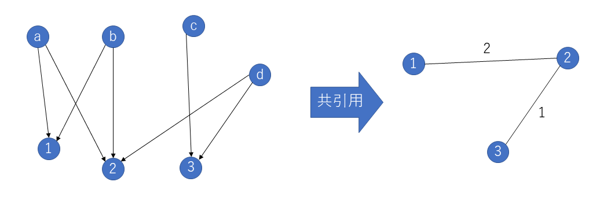
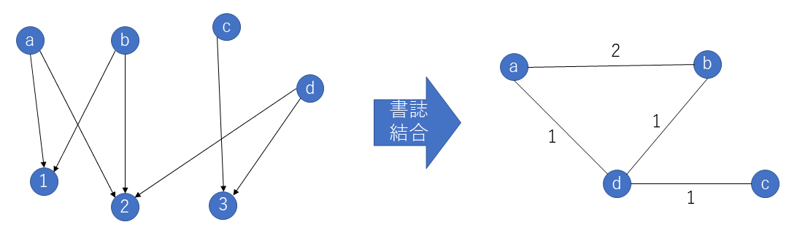

3. 頂点間の距離¶
有向グラフと無向グラフ¶
辺に方向のあるものを 有向グラフ 、ないものものを 無向グラフ と呼ぶ。webページのリンク関係や論文の引用関係、twitterのフォロー関係などは有向グラフで、電車の路線図や対面の知り合い関係、facebookの友達関係などは無向グラフで表す。
有向グラフの次数には、入次数と出次数がある。このため、有向グラフは次数や辺の数の取り扱いが複雑になる。
共引用と書誌結合¶
有向グラフを無向グラフに変換する方法として、共引用と書誌結合がある。
共引用(co-citation)¶
共引用 は、複数の頂点への有向辺を持つ頂点があるときに、有向辺を向けられている頂点同士を無向辺でつなぐことをいう。
たとえば、同じ文献から引用されている文献同士をつなぐことや、twitterで同じ人からフォローされている人同士をつなぐことに対応する。
元の隣接行列を \(A\)、その転置行列を \(A^T\) とするとき、\(A^TA\) を求めて、その対角成分をすべて0にしたものが、共引用の隣接行列になる。 (閉路の隣接行列のはなしを先週忘れた)
{kind=link}
書誌結合(biblographic coupling)¶
書誌結合 は、共引用の反対で、同じ頂点への有向辺を持つ複数の頂点があるときに、その頂点同士を無向辺でつなぐことをいう。
たとえば、同じ文献を引用している文献同士をつなぐことや、twitterで同じ人をフォローしている人同士をつなぐことに対応する。エルデシュ数はこれ。
元の隣接行列を \(A\)、その転置行列を \(A^T\) とするとき、\(AA^T\) を求めて、その対角成分をすべて0にしたものが、共引用の隣接行列になる。
{kind=link}
ネットワーク上の距離¶
二つの頂点を結ぶ最短路に含まれる辺の数を 距離 と呼ぶ。 すべての2点間の距離の平均値を平均距離、最大値を 直径 と呼ぶ。
networkxでは、以下の通りの関数が用意されている。
# Gを連結なグラフとして
nx.all_pairs_shortest_path_length(G) # Gのすべての点の距離
nx.average_shortest_path_length(G) # Gの平均距離
nx.diameter(G) # Gの直径
規則的なグラフの平均距離¶
これまでに扱った、規則的なグラフの平均距離を計算してみよう。
G=nx.balanced_tree(3,4) # tree
print("++++++ 3*4 Tree ++++++")
print("ノードの数:",len(G.nodes()))
print("平均距離:",nx.average_shortest_path_length(G))
print("直径:",nx.diameter(G))
print("")
print("+++++ 11*11 グリッド ++++++")
G=nx.grid_2d_graph(11,11) #2D-grid
print("ノードの数:",len(G.nodes()))
print("平均距離:",nx.average_shortest_path_length(G))
print("直径:",nx.diameter(G))
ネットワーク上の探索¶
ネットワーク上での探索には、いろいろなアルゴリズムがかかわる。それぞれ重要なアルゴリズムではあるが、プログラミングの練習になってしまうので、ちょっとここではアルゴリズムの中身は割愛。必要になったらやりましょう。
- 頂点の探索
幅優先探索
深さ優先探索
- 最短路の探索
- 全点対間最短路探索
Floyed-Worshall法
- 単一始点最短路探索
Bellman-Ford法
Dijkstra法
ランダムグラフ¶
ランダムグラフ¶
ランダムグラフは、それぞれの頂点がある確率ｐで辺を持つグラフを指す。これを、Erdos-Renyi modelと呼ぶ。
これにしたがって、ランダムグラフの隣接行列は以下のように作ることができる。
import random
p=0.05 #辺を張る確率
n=100 # 頂点の数
Adj=np.zeros((n,n)) # 隣接行列
for i in range(n): #すべての可能な頂点の組み合わせについて
for j in range(n):
if i==j: #自己ループはなし
Adj[i][j]=0
else:
if random.random()<p: # 確率ｐで辺
Adj[i][j]=1
else:
Adj[i][j]=0
# 隣接行列をグラフに変換
G = nx.from_numpy_matrix(Adj)
nx.draw(G) # Gは連結とはかぎらない
ランダムグラフの性質¶
ランダムグラフについても、平均距離、直径を見てみましょう。
# ランダムグラフGを先に作る。
# Gは連結とは限らないので、最大の連結成分をとりだす。
# 連結でないグラフの平均距離は無限大になってしまう。
S=nx.connected_components(G) # 連結成分をとりだす
# connected_componentsの返り値はgeneratorなので、繰り返し処理の中で中身を作る。（eg. iterator）
# 以下、最大成分を取り出す手続き。プログラミングの練習と思って。
max_size=0
for component in S: # 繰り返しで中身を見る
print(len(component))
if len(component)>max_size:
max_size=len(component)
subgraph=G.subgraph(component).copy() # subgraph()は部分グラフを取り出す関数。
print("++++++ random graph ++++++")
print("ノードの数:",len(subgraph.nodes()))
print("平均距離:",nx.average_shortest_path_length(subgraph))
print("直径:",nx.diameter(subgraph))
pがある程度大きい場合、大きい成分と残りの小さい成分になる。pが小さい場合、小さい成分がたくさんできる。ここでは、pを適当に調節して大きな成分の平均距離と直径をみましょう。
相転移(S.カウフマン「自己組織化と進化の論理」より)¶
ランダムグラフの一つの性質として、辺を持つ確率がある確率ｐを超えると、大きなかたまり（コンポーネント）が現れることがあります。頂点の数を \(n\) 、存在する辺の数を \(e\) とすると、辺の数が \(e/n=1/2\) を超えると、大きなかたまりができます。
n=500 # 頂点の数
R=np.zeros((n*2,1))
Adj=np.zeros((n,n)) # 隣接行列
for i in range(n*2):
#始点と終点をランダムに選ぶ
#とりあえず、始点と終点が同じもしくはすでに選ばれた点でも気にしない
s=random.randint(0,n-1) #始点を[0,n-1]から選ぶ
t=random.randint(0,n-1) #終点を[0,n-1]から選ぶ
# 隣接行列上で始点と終点をつなぐ
Adj[s][t]=1
Adj[t][s]=1 #無向グラフなので両方向
G=nx.from_numpy_matrix(Adj)
largest=max(nx.connected_components(G), key=len)
#print(i,len(largest))
R[i]=len(largest)
# 以下描画
X=(np.arange(n*2)+1)/n
plt.plot(X,R)
plt.xlabel("num of edges/num of nodes")
plt.ylabel("size of Big Component")
plt.show()
{kind=link}
現実のグラフ¶
ここで現実のグラフも見ておきましょう。network data(http://www-personal.umich.edu/~mejn/netdata/)から、適当なネットワークをダウンロードして、colabratoryにアップロードしましょう。例として、Les Miserablesネットワークを使います。これは、レ・ミゼラブルの登場人物の人間関係のグラフだそうです。レ・ミゼラブルは読んだことないのでよくわかりませんが、いろんな教科書とかでよく例に出るネットワークなのでとりあえず。現実のグラフではないような気もしますが。
G=nx.read_gml("lesmis.gml") # gml形式のグラフを読み込み
# 保存はwrite_gml()でできる
nx.draw(G) # 描画して確認
print("++++++ lesmis graph ++++++")
print("ノードの数:",len(G.nodes()))
print("平均距離:",nx.average_shortest_path_length(G))
print("直径:",nx.diameter(G))
迂回路の話は次回。